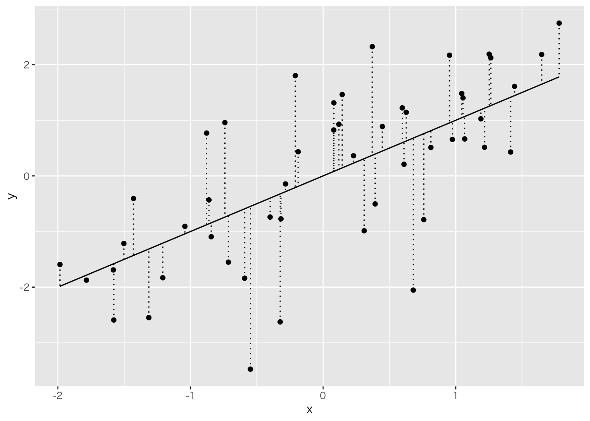
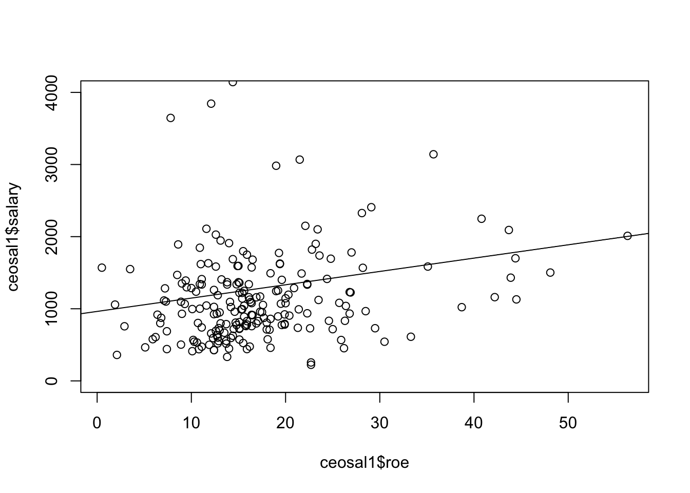
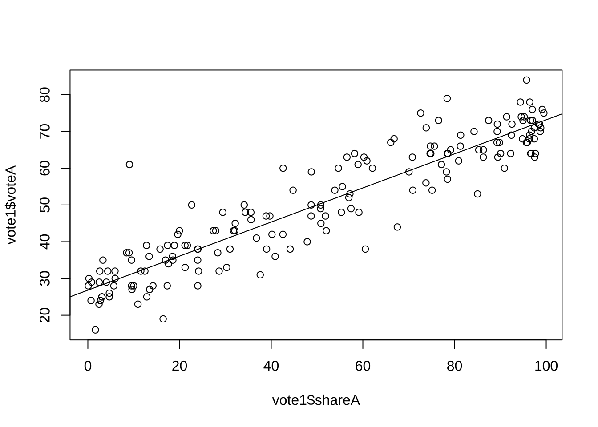
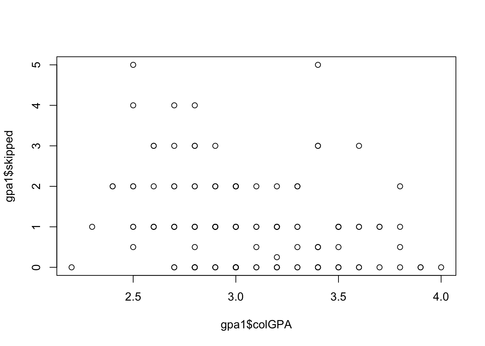

chapter: 7 Rによる重回帰分析
# ライブラリコマンドでの読み込みは毎回必要
library(readxl)
library(ggplot2)
library(dplyr)
library(foreign)
library(stargazer)
# Macユーザ向けの日本語フォント
theme_set(theme_gray(base_size = 10, base_family = "HiraginoSans-W3"))
#ウィンドウズユーザー向けの日本語フォント
#windowsFonts(YuGothic = windowsFont("Yu Gothic"))
#theme_set(theme_gray(base_size = 10, base_family = "YuGothic"))
#getwd() # 現在の作業ディレクトリを確認
setwd("/users/yamamoto/R/ForTeaching") # 作業ディレクトリの変更7.1 最小二乗法(Ordinary Least Squere Method)とは
観測されたデータ\((X,Y)\)に対して、
\[Y=a+bX\]
という直線を当てはめることを考える。データが現実を反映しているとすれば、当てはまりが良ければ良いほど、求められた直線は現実のメカニズムを反映していることになる。もし、完全に当てはまったとすれば問題はないがそのようなことはまずないので、当てはまりの良さを判断する客観的な基準が必要になる。
# courtesy to
# https://shohei-doi.github.io/notes/posts/2019-05-17-regression/
n <- 50
tibble(x = rnorm(n, 0, 1),
y = x + rnorm(n, 0, 1)) %>%
ggplot() +
geom_point(aes(x = x, y = y)) +
geom_line(aes(x = x, y = x)) +
geom_errorbar(aes(x = x, ymin = x, ymax = y),linetype="dotted")
上の図でいう垂直方向の直線は試しに引いてみた直線
\[ \tilde{Y}=\tilde{a}+\tilde{b}x \] と実際の観測値との誤差を示すものである。この誤差の二乗を最小にするような直線が最も当てはまりの良い直線と考える。誤差を\(u\)とすれば、
\[ \min J=\sum \tilde{u}_i^2=\sum(Y_i-\tilde{a}-\tilde{b}X_i)^2 \]
の解である\(\hat{a}\)と\(\hat{b}\)を最小二乗推定量と呼ぶ。上式を微分してゼロとおくと、
\[\frac{\partial J}{\partial \tilde{a}}=\sum(-2(Y_i-\hat{a}-\hat{b}X_i))=0\] 及び
\[\frac{\partial J}{\partial \tilde{b}}=\sum(-2X_i(Y_i-\hat{a}-\hat{b}X_i))=0\] となる。ここで、\(\hat{a}\)と\(\hat{b}\)は上式を満たす傾きと切片として、任意の\(a\)と\(b\)から区別する意味で使用している。これを変形すると以下を得る。
\[n\hat{a}+\left(\sum X_i \right)\hat{b}=\sum Y_i\] 及び
\[ \left(\sum X_i \right)\hat{a}+\left(\sum X_i^2 \right)\hat{b}=\sum X_i Y_i\] これを連立して解くと、
\[ \hat{b}=\frac{\sum \left(X_i - \overline{X}\right)\left(Y_i-\overline{Y}\right)}{\sum \left(X_i - \overline{X}\right)^2}\] 及び
\[\hat{a}=\overline{Y}-\hat{b} \overline{X} \] ただし、\(\overline{X}\)と\(\overline{Y}\)は平均値を意味する。
\(X\)及び\(Y\)は観測値なので、観測値から傾きと切片を計算できることがわかる。また、回帰直線は必ず標本平均を通ることも確認できる。
なお、最小二乗法に必要な仮定やその優れた性質については、
http://www.yuhikaku.co.jp/books/detail/9784641053854
などの入門の計量経済学の本を参照のこと。
7.2 単回帰の事例
# Wooldridge (2016) Introductory Econometrics, Thomson.
# の事例より。
#######################################################
# CEOのサラリーは会社のROEでどの程度説明できるか？
#######################################################
#
# 自己資本利益率（ROE：Return on Equity）とは、自己資本（純資産）に対してどれだけの
# 利益が生み出されたのかを示す財務分析の指標
# from Wooldridge(2016, section 2.2)
#ceosal1の最後の２文字は、小文字のエルと数字の１なので注意
ceosal1<-read.dta("http://fmwww.bc.edu/ec-p/data/wooldridge/ceosal1.dta")
ceoresult<-lm(salary~roe,data=ceosal1)
summary(ceoresult)##
## Call:
## lm(formula = salary ~ roe, data = ceosal1)
##
## Residuals:
## Min 1Q Median 3Q Max
## -1160 -526 -254 139 13500
##
## Coefficients:
## Estimate Std. Error t value Pr(>|t|)
## (Intercept) 963.2 213.2 4.52 1.1e-05 ***
## roe 18.5 11.1 1.66 0.098 .
## ---
## Signif. codes: 0 '***' 0.001 '**' 0.01 '*' 0.05 '.' 0.1 ' ' 1
##
## Residual standard error: 1370 on 207 degrees of freedom
## Multiple R-squared: 0.0132, Adjusted R-squared: 0.00842
## F-statistic: 2.77 on 1 and 207 DF, p-value: 0.0978plot(ceosal1$roe,ceosal1$salary,ylim=c(0,4000))
abline(ceoresult)
#######################################################
# 選挙費用で投票結果はどの程度説明できるか？
#######################################################
# from Wooldridge(2016, section 2.2のexample 2.5)
# 1988年のアメリカのとある州における国会議員選挙の結果
# voteAは候補者Aの得票シェア、shareAは候補者Aの選挙運動費のシェア
vote1<-read.dta("http://fmwww.bc.edu/ec-p/data/wooldridge/vote1.dta")
voteAresult<-lm(voteA~shareA,data=vote1)
summary(voteAresult)##
## Call:
## lm(formula = voteA ~ shareA, data = vote1)
##
## Residuals:
## Min 1Q Median 3Q Max
## -16.89 -4.07 -0.17 3.50 29.98
##
## Coefficients:
## Estimate Std. Error t value Pr(>|t|)
## (Intercept) 26.8125 0.8872 30.2 <2e-16 ***
## shareA 0.4638 0.0145 31.9 <2e-16 ***
## ---
## Signif. codes: 0 '***' 0.001 '**' 0.01 '*' 0.05 '.' 0.1 ' ' 1
##
## Residual standard error: 6.4 on 171 degrees of freedom
## Multiple R-squared: 0.856, Adjusted R-squared: 0.855
## F-statistic: 1.02e+03 on 1 and 171 DF, p-value: <2e-16plot(vote1$shareA,vote1$voteA)
abline(voteAresult)
上の２つ目の結果で、shareAのt値は31.9でt分布の97.5%よりもはるかに大きな値となっている。そのためめったに起らない事象と位置付けることができる。
この時の事象は帰無仮説：\(\hat{b}=0\)であるから、この帰無仮説を棄却し、\(X\)と\(Y\)は正の相関関係にあると言える。
7.3 重回帰分析
#######################################################
# 大学の成績は何で説明できるか？
#######################################################
# from Wooldridge(2016, example 4.3)
# colGPA: 大学での成績
# hsGPA: 高校での成績
# ACT: 大学入試の際に受ける共通テストの成績
# skipped: １週間の平均講義欠席回数
gpa1<-read.dta("http://fmwww.bc.edu/ec-p/data/wooldridge/gpa1.dta")
GPAresult<-lm(colGPA~hsGPA+ACT+skipped,data=gpa1)
summary(GPAresult)##
## Call:
## lm(formula = colGPA ~ hsGPA + ACT + skipped, data = gpa1)
##
## Residuals:
## Min 1Q Median 3Q Max
## -0.8570 -0.2320 -0.0393 0.2482 0.8166
##
## Coefficients:
## Estimate Std. Error t value Pr(>|t|)
## (Intercept) 1.3896 0.3316 4.19 5.0e-05 ***
## hsGPA 0.4118 0.0937 4.40 2.2e-05 ***
## ACT 0.0147 0.0106 1.39 0.1658
## skipped -0.0831 0.0260 -3.20 0.0017 **
## ---
## Signif. codes: 0 '***' 0.001 '**' 0.01 '*' 0.05 '.' 0.1 ' ' 1
##
## Residual standard error: 0.33 on 137 degrees of freedom
## Multiple R-squared: 0.234, Adjusted R-squared: 0.217
## F-statistic: 13.9 on 3 and 137 DF, p-value: 5.65e-08plot(gpa1$colGPA,gpa1$skipped)
7.4 因果推論 (Quasi Experiment)の例
因果推論の方法として、Wooldridge(2016, Example 13.3)を例にDifference-in-Differencesを解説する。この例は、Kiel and McClain(1995, JEEM)からの抜粋であり、Massachusetts州のNorth Andoverにおいて、焼却炉を建設することで周辺の住宅価値が下がったかどうかをDifference-in-Differencesで分析している。
分析の前提条件として、1978年には焼却炉建設の噂さえなかったが1981年には建設の噂が出回ったという背景がある。
住宅価格(\(=rprice\))を、1981年のデータだけを使って焼却炉に近い物件のダミー変数(\(=nearinc\))で回帰する。
\[ rprice=a+b\times nearinc+u \]
kielmc<-read.dta("http://fmwww.bc.edu/ec-p/data/wooldridge/kielmc.dta")
# Separate regressions for 1978 and 1981: report coeeficients only
coef( lm(rprice~nearinc, data=kielmc, subset=(year==1981)) )## (Intercept) nearinc
## 101308 -30688\(\hat{b}=-30,688.7\)という結果を得る。\(\hat{a}\)は平均的な1981年の住宅価格を意味している。しかし、この結果は焼却炉建設の噂がもたらしたマイナス要因とは言えない。なぜなら、まだ噂がなかった1978年のデータだけで上記の式を回帰しても、\(\hat{b}=-18824.37\)というマイナスの結果となるためである。
kielmc<-read.dta("http://fmwww.bc.edu/ec-p/data/wooldridge/kielmc.dta")
# Separate regressions for 1978 and 1981: report coeeficients only
coef( lm(rprice~nearinc, data=kielmc, subset=(year==1978)) )## (Intercept) nearinc
## 82517 -18824つまり、もともと住宅価格の安い地域に焼却炉の建設が行われたのである。よって、焼却炉立地の影響は、
\[\hat{b}_{81}-\hat{b}_{78}=-30,68.27-(-18,824.37)=-11,863.9\] と考えるのが自然である。これを差の差の推定量(difference-in-differences estimator)と呼ぶ。なぜなら、
\[\hat{b}_{81}-\hat{b}_{78}=\left(\overline{rprice}_{81,n}-\overline{rprice}_{81,f}\right)-\left(\overline{rprice}_{78,n}-\overline{rprice}_{78,f}\right)\] と書き直せるからである。ここで、添字の\(n\)は焼却炉に近い住宅の価格、\(f\)は遠い住宅の価格を表している。
実践的には、統計的検定ができるように以下の回帰分析で推定量を計算する。
\[rprice=a+b_{1} \cdot y81 + b_{2} \cdot nearinc + b_{3} \cdot (y81 \times nearinc) + u\] を1978年と1981年の両方のデータを使って推定する。ただし、\(y81\)は1981年の住宅価格で1、1978年の住宅価格に対して0をとるダミー変数である。この時、\(a\)は1978年の平均住宅価格、\(b_1\)は1978年から1981年における住宅価格の変化を意味する。\(b_2\)は、焼却炉建設と関係なく、焼却炉周辺地域の住宅価格の他地域との差を表す。最後に、\(b_3\)は焼却炉建設の噂による価格変化を表す(=DiD estimator)。
このように、焼却炉建設など政策の影響を受けるサンプルをTreatment groupと呼ぶ。影響を受けないグループをControl groupと言う。因果推論を行うためには、Treatment groupとControl groupの両方が必ず必要である。より一般には以下のように書ける。
\[Y=a+b_{1} \cdot YD + b_{2} \cdot T + b_{3} \cdot (YD \times T) +\mathbf{z}+ u\] ここで、\(YD\)はtreatmentの前と後でそれぞれ\(0\)と\(1\)をとるダミー変数、\(T\)はtreatmentのあるなしでそれぞれ\(1\)や\(0\)をとるダミー変数、\(\mathbf{z}\)はその他の変数をさす。DiD estimatorはもちろん\(b_3\)である。
| Before | After | After - Before | |
|---|---|---|---|
| Control | \(a\) | \(a+b_1\) | \(b_1\) |
| Treatment | \(a+b_2\) | \(a+b_1+b_2+b_3\) | \(b_1+b_3\) |
| Treatment - Control | \(b_2\) | \(b_2+b_3\) | \(b_3\) |
7.4.1 例1
# Joint regression including an interaction term
# 他のコントロール変数を含めない場合
result1<- lm(rprice~nearinc+y81+I(nearinc*y81), data=kielmc)
summary(result1)##
## Call:
## lm(formula = rprice ~ nearinc + y81 + I(nearinc * y81), data = kielmc)
##
## Residuals:
## Min 1Q Median 3Q Max
## -60678 -17693 -3031 12483 236307
##
## Coefficients:
## Estimate Std. Error t value Pr(>|t|)
## (Intercept) 82517 2727 30.26 < 2e-16 ***
## nearinc -18824 4875 -3.86 0.00014 ***
## y81 18790 4050 4.64 5.1e-06 ***
## I(nearinc * y81) -11864 7457 -1.59 0.11259
## ---
## Signif. codes: 0 '***' 0.001 '**' 0.01 '*' 0.05 '.' 0.1 ' ' 1
##
## Residual standard error: 30200 on 317 degrees of freedom
## Multiple R-squared: 0.174, Adjusted R-squared: 0.166
## F-statistic: 22.3 on 3 and 317 DF, p-value: 4.22e-137.4.2 例2
# 住宅の築年数だけ含めた場合
result2<- lm(rprice~nearinc+y81+age+I(age^2)+I(nearinc*y81), data=kielmc)
summary(result2)##
## Call:
## lm(formula = rprice ~ nearinc + y81 + age + I(age^2) + I(nearinc *
## y81), data = kielmc)
##
## Residuals:
## Min 1Q Median 3Q Max
## -79349 -14431 -1711 10069 201486
##
## Coefficients:
## Estimate Std. Error t value Pr(>|t|)
## (Intercept) 8.91e+04 2.41e+03 37.04 < 2e-16 ***
## nearinc 9.40e+03 4.81e+03 1.95 0.05171 .
## y81 2.13e+04 3.44e+03 6.19 1.9e-09 ***
## age -1.49e+03 1.32e+02 -11.33 < 2e-16 ***
## I(age^2) 8.69e+00 8.48e-01 10.25 < 2e-16 ***
## I(nearinc * y81) -2.19e+04 6.36e+03 -3.45 0.00064 ***
## ---
## Signif. codes: 0 '***' 0.001 '**' 0.01 '*' 0.05 '.' 0.1 ' ' 1
##
## Residual standard error: 25500 on 315 degrees of freedom
## Multiple R-squared: 0.414, Adjusted R-squared: 0.405
## F-statistic: 44.6 on 5 and 315 DF, p-value: <2e-167.4.3 例3
# 他のコントロール変数も含めた場合
result3<- lm(rprice~nearinc+y81+age+I(age^2)+I(nearinc*y81)+intst+
land+area+rooms+baths, data=kielmc)
summary(result3)##
## Call:
## lm(formula = rprice ~ nearinc + y81 + age + I(age^2) + I(nearinc *
## y81) + intst + land + area + rooms + baths, data = kielmc)
##
## Residuals:
## Min 1Q Median 3Q Max
## -76721 -8885 -252 8433 136649
##
## Coefficients:
## Estimate Std. Error t value Pr(>|t|)
## (Intercept) 1.38e+04 1.12e+04 1.24 0.2172
## nearinc 3.78e+03 4.45e+03 0.85 0.3966
## y81 1.39e+04 2.80e+03 4.98 1.1e-06 ***
## age -7.39e+02 1.31e+02 -5.64 3.8e-08 ***
## I(age^2) 3.45e+00 8.13e-01 4.25 2.9e-05 ***
## I(nearinc * y81) -1.42e+04 4.99e+03 -2.84 0.0048 **
## intst -5.39e-01 1.96e-01 -2.74 0.0064 **
## land 1.41e-01 3.11e-02 4.55 7.7e-06 ***
## area 1.81e+01 2.31e+00 7.84 7.2e-14 ***
## rooms 3.30e+03 1.66e+03 1.99 0.0476 *
## baths 6.98e+03 2.58e+03 2.70 0.0073 **
## ---
## Signif. codes: 0 '***' 0.001 '**' 0.01 '*' 0.05 '.' 0.1 ' ' 1
##
## Residual standard error: 19600 on 310 degrees of freedom
## Multiple R-squared: 0.66, Adjusted R-squared: 0.649
## F-statistic: 60.2 on 10 and 310 DF, p-value: <2e-16stargazerというパッケージでまとめて表示できる。
stargazer(result1,result2,result3,type="html")| Dependent variable: | |||
| rprice | |||
| (1) | (2) | (3) | |
| nearinc | -18,824.000*** | 9,398.000* | 3,780.000 |
| (4,875.000) | (4,812.000) | (4,453.000) | |
| y81 | 18,790.000*** | 21,321.000*** | 13,928.000*** |
| (4,050.000) | (3,444.000) | (2,799.000) | |
| age | -1,494.000*** | -739.000*** | |
| (132.000) | (131.000) | ||
| I(age2) | 8.700*** | 3.500*** | |
| (0.850) | (0.810) | ||
| I(nearinc * y81) | -11,864.000 | -21,920.000*** | -14,178.000*** |
| (7,457.000) | (6,360.000) | (4,987.000) | |
| intst | -0.540*** | ||
| (0.200) | |||
| land | 0.140*** | ||
| (0.031) | |||
| area | 18.000*** | ||
| (2.300) | |||
| rooms | 3,304.000** | ||
| (1,661.000) | |||
| baths | 6,977.000*** | ||
| (2,581.000) | |||
| Constant | 82,517.000*** | 89,117.000*** | 13,808.000 |
| (2,727.000) | (2,406.000) | (11,167.000) | |
| Observations | 321 | 321 | 321 |
| R2 | 0.170 | 0.410 | 0.660 |
| Adjusted R2 | 0.170 | 0.400 | 0.650 |
| Residual Std. Error | 30,243.000 (df = 317) | 25,543.000 (df = 315) | 19,619.000 (df = 310) |
| F Statistic | 22.000*** (df = 3; 317) | 45.000*** (df = 5; 315) | 60.000*** (df = 10; 310) |
| Note: | p<0.1; p<0.05; p<0.01 | ||
7.4.4 logをとった場合
効果を割合として解釈できる。より当てはまりがよくなる場合もある。
DiD <- lm(log(rprice)~nearinc*y81, data=kielmc)
DiDcontr <- lm(log(rprice)~nearinc*y81+age+I(age^2)+log(intst)+
log(land)+log(area)+rooms+baths, data=kielmc)
stargazer(DiD,DiDcontr,type="html")| Dependent variable: | ||
| log(rprice) | ||
| (1) | (2) | |
| nearinc | -0.340*** | 0.032 |
| (0.055) | (0.047) | |
| y81 | 0.190*** | 0.160*** |
| (0.045) | (0.028) | |
| age | -0.008*** | |
| (0.001) | ||
| I(age2) | 0.00004*** | |
| (0.00001) | ||
| log(intst) | -0.061* | |
| (0.032) | ||
| log(land) | 0.100*** | |
| (0.024) | ||
| log(area) | 0.350*** | |
| (0.051) | ||
| rooms | 0.047*** | |
| (0.017) | ||
| baths | 0.094*** | |
| (0.028) | ||
| nearinc:y81 | -0.063 | -0.130** |
| (0.083) | (0.052) | |
| Constant | 11.000*** | 7.700*** |
| (0.031) | (0.420) | |
| Observations | 321 | 321 |
| R2 | 0.250 | 0.730 |
| Adjusted R2 | 0.240 | 0.720 |
| Residual Std. Error | 0.340 (df = 317) | 0.200 (df = 310) |
| F Statistic | 34.000*** (df = 3; 317) | 85.000*** (df = 10; 310) |
| Note: | p<0.1; p<0.05; p<0.01 | |
焼却炉立地の噂は13.2％の住宅価格押し下げ効果があったことがわかる。